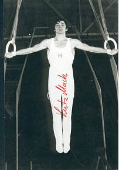

Lutz Mack (GDR)
1979 European FX and R Bronze Medalist

Medal Total
Olympic Games: 1
Silver, 1 Bronze
World Championships: 2 Bronze
European Championships: 2 Bronze
Lutz was born on October 29, 1952 and trained at SC Chemie Halle. After retiring from gymnastics, he became a coach at his club.
Competition Results
1970
Jr. Friendship Tournament (Druzhba): 2nd Team, 4th AA, 1st V, 4th PB
1973
European Championships: 14th AA
GDR-JPN Dual Meet: 2nd Team, 12th AA
Riga International: 1st V
University Games: 16th AA
1974
Blume Memorial: 2nd AA
GDR Championships: 4th AA
World Championships: 3rd Team, 22nd AA
1975
Champions All: 1st AA
DTV Cup: 3rd AA
European Championships: 8th AA
GDR-HUN-Georgian SSR: 5th AA, 1st FX, 1st V
1976
Chunichi Cup: 9th AA
GDR Championships: 3rd AA
GDR-SUI Dual Meet: 1st Team, 1st AA
Olympic Games: 3rd Team, 11th AA
1977
GDR Championships: 3rd AA, 1st R
GDR-ROM Dual Meet: 1st Team, 4th AA
GDR-SUI Dual Meet: 1st Team, 3rd AA
GDR-USSR Dual Meet: 7th AA
Ontario Cup: 3rd AA
Wereld Turn Top: 5th AA, 2nd V, 2nd HB, 3rd R
1978
Chunichi Cup: 4th AA
GDR Championships: 2nd AA, 1st R
GDR-ROM Dual Meet: 1st Team, 4th AA
GDR-USSR Dual Meet: 2nd Team, 8th AA
World Championships: 3rd Team, 22nd AA (prelims), 5th R, 5th V
1979
Cottbus International: 4th AA
DTV Cup: 2nd AA
European Championships: 5th AA, 3rd FX, 3rd R, 5th V, 8th
PH, 8th PB
GDR Championships: 3rd AA, 1st R, 4th FX, 4th V, 6th PB, 8th PH, 8th HB
Paris Grand Prix: 3rd AA
World Championships: 4th Team, 20th AA, 7th R
World Cup: 19th AA
1980
American Cup: 10th AA (prelims)
Cottbus International: 3rd AA, 1st PB, 2nd V
GDR Championships: 4th AA, 2nd R, 2nd V, 3rd PB, 4th FX
GDR-SUI Dual Meet: 1st Team, 2nd AA
Intl. Mixed Pairs: 7th Team
Olympic Games: 2nd Team, 20th AA (prelims)
This page was created on November
06, 2005 and was last updated on Feb. 19, 2017.
© Gymn Forum